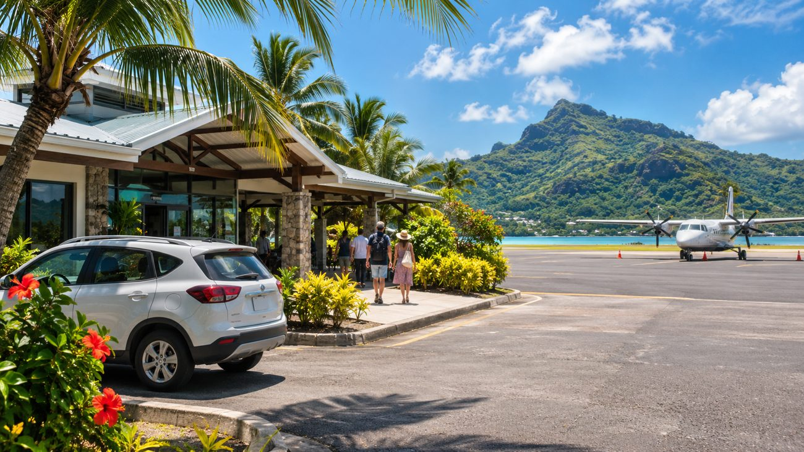

Plan your arrival and choose how to explore the island.

Illustrative image of fictional Taniti.
Arriving by air
Almost all visitors arrive by air. Taniti’s small airport accommodates small jets and propeller planes.
Planning details
Airport expansion is underway so larger jets can land within the next few years. Larger-jet service is not described as currently available.
Arriving by cruise
A small cruise ship docks in Yellow Leaf Bay for one night per week.
Rental cars
Rental cars are available from a local rental agency near the airport.
Plan a rental-car inquiry
Contact the agency near the airport to ask about vehicle availability, pickup arrangements, and rental terms. Agency names, contact details, and prices are not provided in the island brief.
Buses
Public buses serve Taniti City daily from 5 a.m. to 11 p.m. Private buses serve the rest of the island.
Taxis and bicycles
Taxis are available in Taniti City. Several vendors rent bicycles and helmets. Helmets are required by law.
Walking
Taniti City is fairly flat and very walkable. Merriton Landing is also easy to explore on foot.